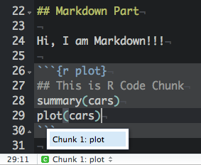
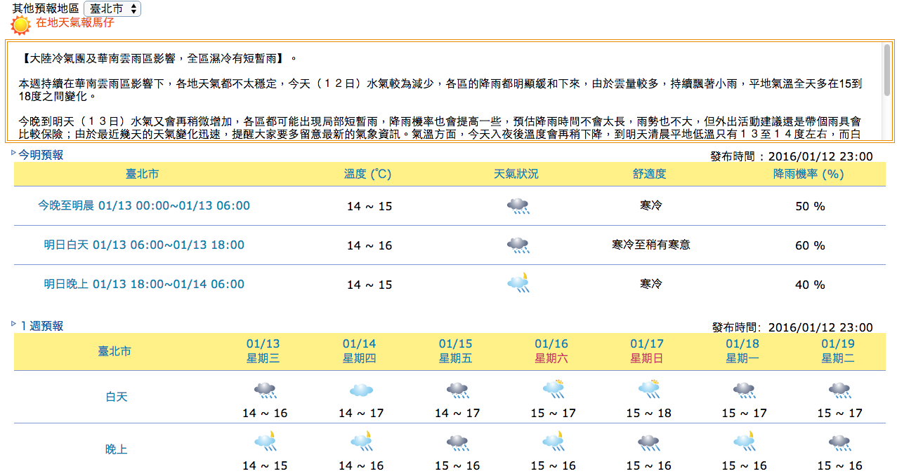

http://goo.gl/52THNf
2018-06-13
What does data analyst do?
http://goo.gl/52THNf
What does data analyst actually do

https://www.coursera.org/course/repdata
Why you need R Markdown?
- 資料分析做不完
- 說明文件沒空寫
- 教授要求換方法
- 老闆說要改流程
- 客戶要我做做看
- 年度報告要總結
Why you need R Markdown
http://goo.gl/YiJrlI
What is R Markdown?
A convenient tool to generate reproducible documents.
- Markdown
- Lightweight markup language
- Remove HTML tag for higher readibility.
- Inline HTML is avaliable.
- R markdown
- Markdown + embedded R code chunks
- (.Rmd) -> (.md) -> (.html, .docx, .pdf)
Why R Markdown
- 製作reproducible的報告、投影片:
document、slides - 想寫數學式子好展現自己的專業 \(e=mc^2\):
mathjax - 只有一份source code，不需要額外複製圖片到報告中:
.rmd - 需求更改時，可以動態改變報告內容:
integrated shiny - 增加資料分析演算法的可讀性:
code and text - HTML的報告和投影片的格式方便瀏覽:
html - IDE? RStudio提供支援:
Knit Button
Installation
- 最新版的RStudio已經包含R Markdown功能
- 你也可以透過以下指令安裝R Markdown套件：
install.packages("rmarkdown")
R Markdown 快速導覽
Overview
Markdown

R Code Chunks
Inline R Code
- 利用 `r` 在markdown中插入R程式
- 這是DSP推出的第 `ｒ 3+1`門課程
- 這是DSP推出的第 4門課程
- 鳶尾花資料集(iris dataset)有 `ｒ levels(iris$Species)` 等種類， 總共有 `ｒ length(levels(iris$Species))` 種
- 鳶尾花資料集(iris dataset)有 setosa, versicolor, virginica 等種類，
總共有 3 種
Inline R Equations
- 插入 LaTeX 公式的方法：
- 行內
$ equation $ - 段落
$$ equation $$
熵指標的公式為 $-\sum{p_i \log{p_i}}$ ，表示系統的亂度
熵指標的公式為 \(-\sum{p_i \log{p_i}}\) ，表示系統的亂度
請計算高斯分佈 $$f(x;\mu,\sigma^2) = \frac{1}{\sigma\sqrt{2\pi}}
e^{ -\frac{1}{2}\left(\frac{x-\mu}{\sigma}\right)^2 }$$
請計算高斯分佈 \[f(x;\mu,\sigma^2) = \frac{1}{\sigma\sqrt{2\pi}} e^{ -\frac{1}{2}\left(\frac{x-\mu}{\sigma}\right)^2 }\]
Rendering Output
- RStudio: "Knit" command:
- (Win:Ctrl+Shift+K / OSX:Command+Shirt+K)
- (Win:Ctrl+Shift+K / OSX:Command+Shirt+K)
- Command line: rmarkdown::render function
rmarkdown::render("input.Rmd")
Markdown Basics
Markdown Quick Reference
help (?)可以查閱Markdown語法R Code Chunks
Overview
R code will be evaluated and printed
```{r}
summary(cars$dist)
```
summary(cars$dist)
Min. 1st Qu. Median Mean 3rd Qu. Max.
2 26 36 43 56 120
Overview (cont.)
```{r}
plot(women)
```
plot(women)

Named R code chunk.
```{r plot}
summary(cars)
plot(cars)
```
- Easy Navigation in RStudio

Basic Chunk Options
echo(TRUE): whether to include R source code in the output fileeval(TRUE): whether to evaluate the code chunkmessage(TRUE): whether to preserve messages emitted by message()results('hide','asis'): hide output ; asis treats the output of your R code as literal Markdown (when using like kable function)include(TRUE): whether to be written into the output document, but the code is still evaluated and plot files are generatedwarning(TRUE): whether to preserve warnings in the outputcomment("##"): set to comment notation
Basic Chunk Options (cont.)
Set global chunk options at code chunks header:
knitr::opts_chunk$set(echo=FALSE, results='hide')
Exercise：
Exercise: Original：

Exercise: After：

Exercise Q1
利用R Markdown 製作《一周天氣預報》書面報告。 - 計算01/28日當日的最高溫與最低溫度
# Hint： # 1. 下載weather-utf8.csv到自己的電腦上 # 2. 在R chunk中，利用read.csv()讀取檔案進行分析 # Windows: read.csv(,fileEncoding="UTF-8") # 3. 找出01/28當日最高溫 max() # 4. 找出01/28當日最低溫 min() # 5. use inline R chunk `r max(...)`
Exercise A1
利用R Markdown 製作《一周天氣預報》書面報告。 - 計算01/28日當日的最高溫與最低溫度
# Hint for Linux & Mac：
dat <- read.csv("data/weather-utf8.csv")
max(dat[1:2, 4:5])
min(dat[1:2, 4:5])
# 預測高溫約`r max(dat[1:2,4:5])`度，低溫約`r min(dat[1:2,4:5])`度
# Hint for Windows：
dat <- read.csv("data/weather-utf8.csv", fileEncoding="UTF-8")
max(dat[1:2, 4:5])
min(dat[1:2, 4:5])
# 預測高溫約`r max(dat[1:2,4:5])`度，低溫約`r min(dat[1:2,4:5])`度
Table Output
- Print data directly:
print(head(women))
height weight 1 58 115 2 59 117 3 60 120 4 61 123 5 62 126 6 63 129
Table Output (cont.)
- Using
knitr::kable:- Set
results='asis'to write raw results from R into the output document
```{r, results='asis'} knitr::kable(women) ```
- Set
| height | weight |
|---|---|
| 58 | 115 |
| 59 | 117 |
| 60 | 120 |
| 61 | 123 |
| 62 | 126 |
| 63 | 129 |
Exercise Q2
利用R Markdown 製作《一周天氣預報》書面報告。 - 製作未來七天天氣預報表
# Hint： # 你可能需要dplyr套件 # 可以先用filter把白天、晚上分開處理 # 利用 paste(低溫,高溫,sep="-") 來製作溫度區間, i.e. 16-17 # 利用colnames, rownames來對整理好的資料表的行與列命名
Exercise A2
利用R Markdown 製作《一周天氣預報》書面報告。 - 製作未來七天天氣預報表
library(dplyr)
day1 <- filter(dat, 早晚=="白天")
day2 <- mutate(day1, 溫度=paste(高溫,低溫,sep="-"))
day3 <- select(day2, 天氣, 溫度)
night1 <- filter(dat, 早晚=="晚上")
night2 <- mutate(night1, 溫度=paste(高溫,低溫,sep="-"))
night3 <- select(night2, 天氣, 溫度)
out <- data.frame(t(bind_cols(day3, night3)))
colnames(out) <- day1$日期
rownames(out) <- c("白天天氣","白天溫度","晚上天氣","晚上溫度")
Exercise A2 (conti.)
利用R Markdown 製作《一周天氣預報》書面報告。 - 製作未來七天天氣預報表
```{r results='asis', echo=FALSE}
knitr::kable(out)
```Exercise Q3
利用R Markdown 製作《一周天氣預報》書面報告。 - 製作未來七天天氣預報圖
# Hint： # 你可能需要ggplot2套件 # Mac顯示中文需設置字型 # http://equation85.github.io/blog/graph-font-of-r-in-mac-os-x/ # par(family='STHeiti')
Exercise A3
利用R Markdown 製作《一周天氣預報》書面報告。 - 製作未來七天天氣預報圖
library(ggplot2);library(reshape2) dat1 <- mutate(dat, 時間=paste(日期,早晚,sep="\n")) dat2 <- select(dat1, 時間, 高溫, 低溫) colnames(dat2)[1] <- "時間" # for Windows user dat3 <- melt(dat2) g <- ggplot(dat3, aes(x=時間, y=value, group=variable, colour=variable)) + geom_line() + labs(x="時間", y="溫度")
# 顯示中文字 Mac user only g + theme_gray(base_family="STHeiti")
Exercise
利用R Markdown 製作《一周天氣預報》書面報告。
Appendiex
About Document Content
---
title: "Introduction to R Markdown"
author: "DSP作者群 @BenQ Workshop"
date: "2018-06-13"
output: html_document
---
YAML metadata

Cover by Wush
Some Useful HTML
Interactive Documents


Publish to the web
Using R packages::slidify to publish your slides to the web
library(slidify)
publish_github("repo", username="user_name")
publish_rpubs("title","file_name.html")
publish_dropbox(dir_name)
publish_gist("title",file="file_name.html",publish=TRUE)
Publish to the web: Github
- sign up or login in Github.com at browser
- find button: New repository to add new one.
- select a name for repository, then created.
- the link of your new repository would be like:
https://github.com/"your_name"/"repo_name".git - find Settings in your profile at top-right corner
- select SSH Keys and add SSH Key
- upload your SSH key which created by your own PC/notebook.
- at RStudio, using Rcommand:
slidify::publish_github("repo_name", username="your_name") - your new page will be ready in 5~10 min and link:
https://"your_name".github.io/"repo_name"/index.html
References
Wush 教學影片
Slidify簡介 by Wush Wu
https://www.youtube.com/watch?v=P97udK2ktuY
20121203 MLDM Monday:markdown + knitr (Hangout 轉播) by Wush Wu
https://www.youtube.com/watch?v=OHKZLeKlUsM